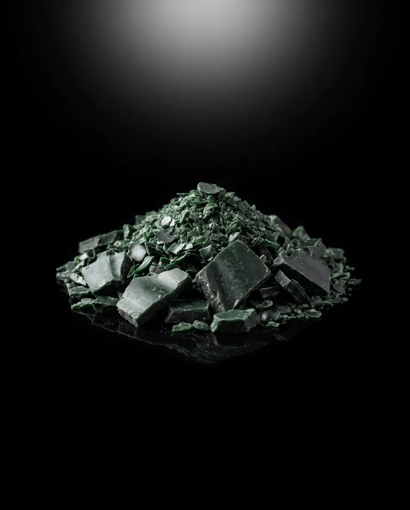
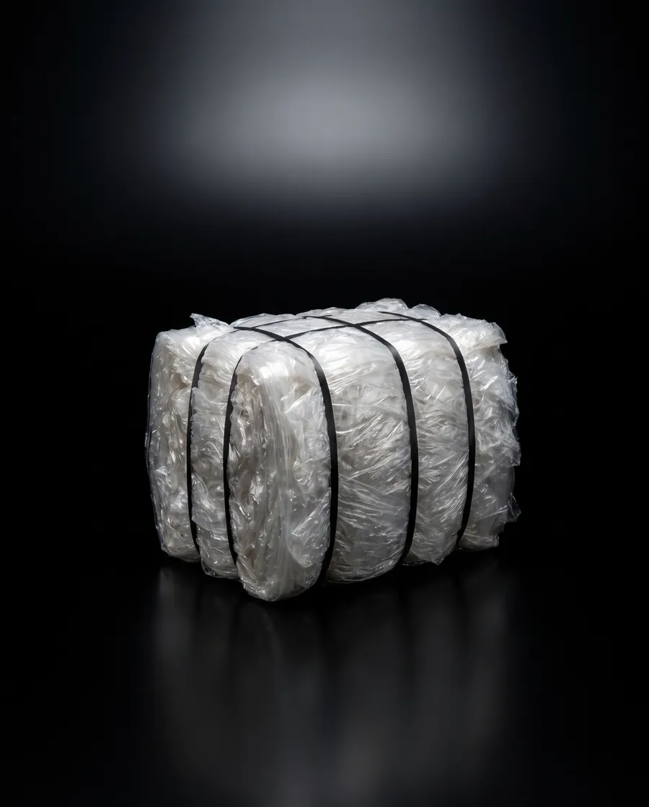

HDPE
HDPEHDPE regrind
From
Can go into
New bins, pipe, pallets and crates.


01/What we take
Bins, car plastics, pallets and packaging, crates and baskets, pipe, tanks and chairs. Shredded and granulated at our own site.
Scroll01 Everything we take
Grouped by who usually has them. Each one has its own page with what’s in it, what comes off on our line and what it can go into.
Councils, bin makers and waste contractors.
Smash repairers, wreckers and dismantlers.
Pallet pools, logistics, warehouses and manufacturers.
Supermarkets, dairies, growers and distribution centres.
Civil, plumbing, irrigation, rural and traffic management.
Councils, events, hospitality and clean-outs.
Other rigid plastics? Call and ask on 0460 555 222.
01 What comes out
Rigid plastics leave the line as regrind: shredded, granulated and packed in bulk bags. Pallet wrap leaves as baled film.
HDPEFrom
Can go into
New bins, pipe, pallets and crates.
 PP
PPFrom
Can go into
Automotive and industrial mouldings, crates and pallets.

PEFrom
Can go into
Pipe, pallets, and garden and building products.

LLDPEFrom
Can go into
Sent to film recyclers for new film, bin liners and bags.
Illustrative images.
01 What we don’t take
Not sure about a load? Call 0460 555 222 before you send it.
01 Talk to us